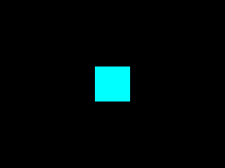

GLSL Matrices, Color, and Uniforms

Last Updated 10/19/14
Up until now our shaders have pretty much just been doing their own thing once we give them the vertex data. With uniform variables, you can set variables for each batch of vertices you process.From LPlainPolygonProgram2D.glvs
void main()
{
//Process vertex
gl_Position = gl_ProjectionMatrix * gl_ModelViewMatrix * gl_Vertex;
}
Now our vertex shader does something interesting. It processes the vertex much in the same way it did in our old fixed function pipeline programs by multiplying the vertices by
the modelview matrix and then the projection matrix to get the coordinates for rasterization.
The "gl_ProjectionMatrix" and "gl_ModelViewMatrix" are uniform variables that stay the same (or stay uniform) for every vertex batch that goes through the pipeline. These uniform variables are built into OpenGL 2.1 GLSL and you can mess with them using the OpenGL matrix functions (glOrtho(), glScale(), glRotate(), etc).
Since this is the programmable pipeline, we can not only say how to use the existing variables in the pipeline but also create our own.
The "gl_ProjectionMatrix" and "gl_ModelViewMatrix" are uniform variables that stay the same (or stay uniform) for every vertex batch that goes through the pipeline. These uniform variables are built into OpenGL 2.1 GLSL and you can mess with them using the OpenGL matrix functions (glOrtho(), glScale(), glRotate(), etc).
Since this is the programmable pipeline, we can not only say how to use the existing variables in the pipeline but also create our own.
From LPlainPolygonProgram2D.glfs
//Plain polygon color
uniform vec4 LPolygonColor = vec4( 1.0, 1.0, 1.0, 1.0 );
void main()
{
//Set fragment
gl_FragColor = LPolygonColor;
}
Here's our fragment shader with our own uniform variable "LPolygonColor". In our shader program "LPolygonColor" has a default color of white. As you can see in the shader,
whatever we set our uniform to be, that's the color that gets rasterized.
Unlike with "gl_ProjectionMatrix" and "gl_ModelViewMatrix", our uniform variable doesn't have any OpenGL functions dedicated to it. Fortunately, OpenGL provides us with functionality to interface with our shader.
Unlike with "gl_ProjectionMatrix" and "gl_ModelViewMatrix", our uniform variable doesn't have any OpenGL functions dedicated to it. Fortunately, OpenGL provides us with functionality to interface with our shader.
From LPlainPolygonProgram2D.h
class LPlainPolygonProgram2D : public LShaderProgram
{
public:
LPlainPolygonProgram2D();
/*
Pre Condition:
-None
Post Condition:
-Initializes variables
Side Effects:
-None
*/
bool loadProgram();
/*
Pre Condition:
-A valid OpenGL context
Post Condition:
-Loads plain polygon program
Side Effects:
-None
*/
void setColor( GLfloat r, GLfloat g, GLfloat b, GLfloat a = 1.f );
/*
Pre Condition:
-Bound LPlainPolygonProgram2D
Post Condition:
-Update uniform color used for rendering
Side Effects:
-None
*/
private:
//Color uniform location
GLint mPolygonColorLocation;
};
The LPlainPolygonProgram2D now has a new variable "mPolygonColorLocation". In order to set a variable in our shader, we need it's location in the shader program. As you can see the
class has new functions and we'll go over those next.
From LPlainPolygonProgram2D.cpp
LPlainPolygonProgram2D::LPlainPolygonProgram2D()
{
mPolygonColorLocation = 0;
}
bool LPlainPolygonProgram2D::loadProgram()
{
//Generate program
mProgramID = glCreateProgram();
//Load vertex shader
GLuint vertexShader = loadShaderFromFile( "31_glsl_matrices_color_and_uniforms/LPlainPolygonProgram2D.glvs", GL_VERTEX_SHADER );
//Check for errors
if( vertexShader == 0 )
{
glDeleteProgram( mProgramID );
mProgramID = 0;
return false;
}
//Attach vertex shader to program
glAttachShader( mProgramID, vertexShader );
//Create fragment shader
GLuint fragmentShader = loadShaderFromFile( "31_glsl_matrices_color_and_uniforms/LPlainPolygonProgram2D.glfs", GL_FRAGMENT_SHADER );
//Check for errors
if( fragmentShader == 0 )
{
glDeleteShader( vertexShader );
glDeleteProgram( mProgramID );
mProgramID = 0;
return false;
}
//Attach fragment shader to program
glAttachShader( mProgramID, fragmentShader );
//Link program
glLinkProgram( mProgramID );
//Check for errors
GLint programSuccess = GL_TRUE;
glGetProgramiv( mProgramID, GL_LINK_STATUS, &programSuccess );
if( programSuccess != GL_TRUE )
{
printf( "Error linking program %d!\n", mProgramID );
printProgramLog( mProgramID );
glDeleteShader( vertexShader );
glDeleteShader( fragmentShader );
glDeleteProgram( mProgramID );
mProgramID = 0;
return false;
}
//Clean up excess shader references
glDeleteShader( vertexShader );
glDeleteShader( fragmentShader );
The new constructor just initializes the variable location, and the program loading routine is largely the same as before only now it has to get the variable location from the
shader program.
From LPlainPolygonProgram2D.cpp
//Get variable location
mPolygonColorLocation = glGetUniformLocation( mProgramID, "LPolygonColor" );
if( mPolygonColorLocation == -1 )
{
printf( "%s is not a valid glsl program variable!\n", "LPolygonColor" );
}
return true;
}
Using glGetUniformLocation(), we can get the location of a uniform from a compiled and linked shader program. The first argument is the ID of the program and the second argument
is the name of the variable. If the variable can't be found, the location returned will be -1.
From LPlainPolygonProgram2D.cpp
void LPlainPolygonProgram2D::setColor( GLfloat r, GLfloat g, GLfloat b, GLfloat a )
{
//Update color in shader
glUniform4f( mPolygonColorLocation, r, g, b, a );
}
After getting the variable location, we can set the uniform variable's value using glUniform(). The first argument is the location of the variable is it's location in the shader
program. The following arguments are the values we're assigning to the uniform in the shader program.
In the shader "LPolygonColor" was a vec4, so we use glUniform4f() to assign the 4 components of the vector.
In the shader "LPolygonColor" was a vec4, so we use glUniform4f() to assign the 4 components of the vector.
From LUtil.cpp
//Basic shader
LPlainPolygonProgram2D gPlainPolygonProgram2D;
//VBO names
GLuint gVBO = NULL;
GLuint gIBO = NULL;
This time around we're using more modern VBO rendering to render the quad.
From LUtil.cpp
bool loadMedia()
{
//VBO data
LVertexPos2D quadVertices[ 4 ];
GLuint indices[ 4 ];
//Set quad vertices
quadVertices[ 0 ].x = -50.f;
quadVertices[ 0 ].y = -50.f;
quadVertices[ 1 ].x = 50.f;
quadVertices[ 1 ].y = -50.f;
quadVertices[ 2 ].x = 50.f;
quadVertices[ 2 ].y = 50.f;
quadVertices[ 3 ].x = -50.f;
quadVertices[ 3 ].y = 50.f;
//Set rendering indices
indices[ 0 ] = 0;
indices[ 1 ] = 1;
indices[ 2 ] = 2;
indices[ 3 ] = 3;
//Create VBO
glGenBuffers( 1, &gVBO );
glBindBuffer( GL_ARRAY_BUFFER, gVBO );
glBufferData( GL_ARRAY_BUFFER, 4 * sizeof(LVertexPos2D), quadVertices, GL_STATIC_DRAW );
//Create IBO
glGenBuffers( 1, &gIBO );
glBindBuffer( GL_ELEMENT_ARRAY_BUFFER, gIBO );
glBufferData( GL_ELEMENT_ARRAY_BUFFER, 4 * sizeof(GLuint), indices, GL_STATIC_DRAW );
return true;
}
Here we set the vertices for a 100x100 quad centered at the origin.
From LUtil.cpp
void render()
{
//Clear color buffer
glClear( GL_COLOR_BUFFER_BIT );
//Reset transformations
glLoadIdentity();
//Solid cyan quad in the center
glTranslatef( SCREEN_WIDTH / 2.f, SCREEN_HEIGHT / 2.f, 0.f );
gPlainPolygonProgram2D.setColor( 0.f, 1.f, 1.f );
//Enable vertex arrays
glEnableClientState( GL_VERTEX_ARRAY );
//Set vertex data
glBindBuffer( GL_ARRAY_BUFFER, gVBO );
glVertexPointer( 2, GL_FLOAT, 0, NULL );
//Draw quad using vertex data and index data
glBindBuffer( GL_ELEMENT_ARRAY_BUFFER, gIBO );
glDrawElements( GL_QUADS, 4, GL_UNSIGNED_INT, NULL );
//Disable vertex arrays
glDisableClientState( GL_VERTEX_ARRAY );
//Update screen
glutSwapBuffers();
}
Here we render the VBO using the shader program. As you can see, we call our function to update the polygon color uniform to set the color to cyan. Now the OpenGL code we wrote to
render a cyan quad will actually work thanks to the proper GLSL code.